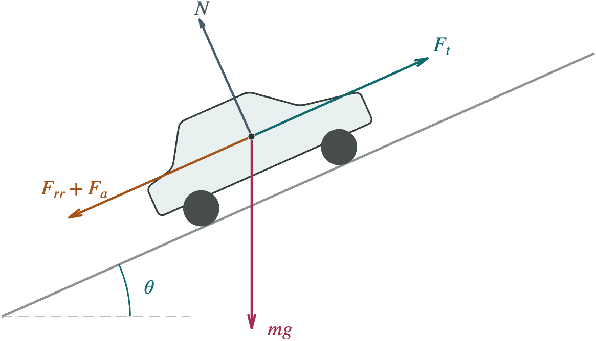
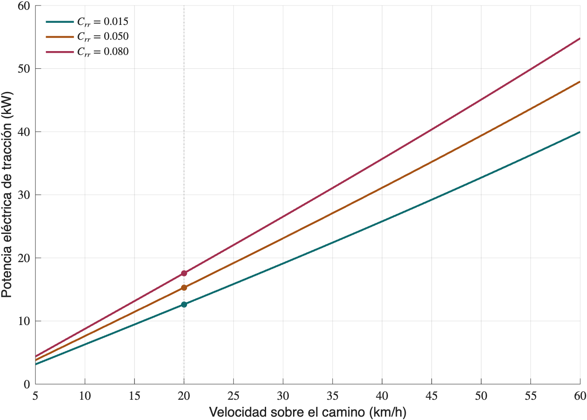

Electromovilidad
Potencia para subir una pendiente
Cómo la masa, la velocidad, el terreno y la adherencia determinan lo que un vehículo puede hacer cuesta arriba
La potencia anunciada de un motor no basta para saber cómo se comportará un vehículo en una subida. También importan la masa transportada, la inclinación del camino, la velocidad y las condiciones de rodadura. A partir de un balance de fuerzas, desarrollamos una estimación de la potencia requerida y distinguimos lo que llega a las ruedas de lo que entrega el motor y consume la batería. Un ejemplo numérico permite comparar superficies y velocidades, mientras que el análisis del par, la adherencia y el régimen térmico muestra por qué una cuenta de kilowatts es necesaria, pero no suficiente, para evaluar la capacidad de ascenso.
Las preguntas
Tras el anuncio del vehículo eléctrico Olinia, algunos de mis estudiantes preguntaron sobre la relación entre la potencia del motor, el peso del vehículo y las pendientes que podría superar. Son preguntas razonables. La cifra de potencia suele ocupar un lugar destacado en una ficha técnica, pero dice poco si no se acompaña de la carga, la velocidad y las condiciones de operación.
El propósito de este artículo no es evaluar Olinia ni atribuirle especificaciones, pero tomaremos esa conversación como punto de partida para estudiar un vehículo hipotético. El modelo servirá para estimar órdenes de magnitud y detectar comparaciones engañosas, sin sustituir un estudio de diseño o una prueba de desempeño.
Conviene separar dos preguntas. Una es si el vehículo puede producir suficiente fuerza para subir; otra, a qué velocidad puede sostener el ascenso. La potencia relaciona ambas mediante $P=Fv$. Reducir la velocidad disminuye la potencia mecánica requerida, pero no elimina la fuerza necesaria para vencer la gravedad.
Pendiente y pendiente porcentual
La pendiente porcentual compara el desnivel vertical $h$ con la distancia horizontal $b$, no con la longitud recorrida sobre el camino. Escribiremos $p$ para su valor numérico en porcentaje y $q$ para la razón correspondiente. Así, una pendiente del 15 % significa $p=15$ y $q=0.15$.
Estas relaciones se obtienen de un triángulo rectángulo y evitan tener que calcular primero el ángulo. Para el 15 %, resultan $\theta\approx8.53^\circ$ y $\sin\theta\approx0.14834$. Una pendiente del 100 % corresponde a $45^\circ$, no a una pared vertical.
En cálculos rápidos es frecuente usar $\sin\theta\approx q$ y $\cos\theta\approx1$. La aproximación es razonable en pendientes moderadas, aunque no es una identidad. Al 15 % sobreestima en torno al 1.12 % la suma de las resistencias gravitatoria y de rodadura de nuestro modelo; al 20 %, la diferencia ronda el 1.98 %.
Las fuerzas que el vehículo debe compensar
Trabajaremos con la masa total $m$, incluidos el vehículo, sus baterías, pasajeros y carga. Si la masa en vacío ya incluye la batería, no debe sumarse otra vez. La masa se mide en kilogramos; el peso es una fuerza, $W=mg$, medida en newtons. Para $m=1200$ kg y $g=9.81\,\mathrm{m/s^2}$, el peso es $11772$ N.
Consideraremos una pendiente localmente recta, un vehículo que avanza cuesta arriba y fuerzas proyectadas sobre la dirección del camino. Supondremos que las ruedas mantienen contacto con el suelo y despreciaremos la sustentación aerodinámica y las oscilaciones verticales. La velocidad $v$ será la medida sobre el camino, no su componente horizontal.

La gravedad y la reacción del suelo
La componente del peso paralela a la carretera se opone al ascenso. La componente perpendicular determina, bajo nuestras hipótesis, la reacción normal total $N$ del suelo.
No todo el peso tira del vehículo cuesta abajo. En una pendiente del 15 %, la fuerza gravitatoria longitudinal del ejemplo es aproximadamente $1746$ N, bastante menor que los $11772$ N de su peso. La distinción entre las componentes longitudinal y normal es también la base de modelos de dinámica vehicular más detallados (MathWorks, 2026c).
La rodadura también consume esfuerzo
Las llantas y el terreno se deforman al rodar. Parte de esa deformación disipa energía, incluso si no hay un deslizamiento visible. Una primera aproximación representa ese efecto con un coeficiente adimensional $C_{rr}$.
El coeficiente constante es una simplificación. La presión de inflado, la carga, la velocidad y el estado del terreno pueden modificar la rodadura; existen modelos que incorporan esas dependencias (MathWorks, 2026b). Usaremos $C_{rr}=0.015$ como valor ilustrativo de referencia, no como una propiedad universal del pavimento.
En arena, lodo o suelo deformable, un único coeficiente puede resultar insuficiente. El hundimiento, el deslizamiento y la interacción entre la llanta y el suelo requieren un tratamiento más específico. Tampoco debe confundirse $C_{rr}$ con el coeficiente de adherencia, que limita la fuerza que las llantas pueden transmitir sin patinar.
El aire importa cada vez más al aumentar la velocidad
En ausencia de viento, modelaremos el arrastre mediante
donde $\rho$ es la densidad del aire, $C_d$ el coeficiente de arrastre y $A_f$ el área frontal. El coeficiente y el área deben corresponder a la misma convención de referencia (NASA, 2025). Con viento de frente de rapidez $u$, el término $v^2$ se sustituye por $(v+u)^2$. La fuerza depende de la velocidad relativa al aire, aunque la potencia mecánica que debe entregar el vehículo sigue calculándose con su velocidad sobre el suelo.
Al duplicar $v$ sin viento, la fuerza aerodinámica se cuadruplica y su contribución a la potencia se multiplica por ocho. No hay una velocidad universal a partir de la cual debamos incluirla. Lo adecuado es comparar su magnitud con las otras fuerzas.
Del balance de fuerzas a la potencia
Sea $F_t$ la fuerza de tracción necesaria y $a=\mathrm{d}v/\mathrm{d}t$ la aceleración longitudinal. La segunda ley de Newton permite escribir
de donde resulta
El término $ma$ no es una nueva resistencia del terreno. Expresa la fuerza neta que necesitamos para cambiar la velocidad. Aquí solo se incluye la inercia traslacional; un análisis de aceleración más preciso debe considerar también las inercias de ruedas, motor y transmisión. A velocidad constante, $a=0$ y ese término desaparece.
Sin deslizamiento apreciable y bajo las simplificaciones anteriores, la potencia mecánica requerida en las ruedas es $P_{\mathrm{ruedas}}=F_tv$. Usando la pendiente porcentual, obtenemos una expresión que conserva la geometría exacta del modelo.
La consistencia de unidades evita errores grandes. Debemos usar $m$ en kg, $v$ en m/s, $a$ en $\mathrm{m/s^2}$, $\rho$ en $\mathrm{kg/m^3}$ y $A_f$ en $\mathrm{m^2}$. El resultado queda en watts porque $\mathrm{N\,m/s}=\mathrm{W}$. Para convertir una velocidad de km/h a m/s se divide entre 3.6; para pasar de watts a kilowatts, entre 1000.
La potencia cambia según dónde se mida
La expresión anterior indica lo que debe llegar a las ruedas. Si queremos compararla con una ficha técnica, necesitamos saber qué representa la potencia anunciada. La potencia mecánica del motor y la potencia eléctrica tomada de la batería no son la misma magnitud.
Definamos $\eta_t$ como la eficiencia mecánica desde el eje del motor hasta las ruedas, y $\eta_e$ como la eficiencia del inversor y el motor desde la entrada eléctrica hasta ese eje. La eficiencia conjunta es $\eta=\eta_e\eta_t$. Durante el funcionamiento como motor y para un punto de operación con potencia útil positiva,
$P_{\mathrm{aux}}$ reúne consumos adicionales referidos a los bornes de la batería, como climatización y electrónica. No estamos incluyendo pérdidas internas de la batería ni de recarga desde la red. La rodadura ya aparece en el balance de fuerzas, de modo que no debe contarse otra vez dentro de las pérdidas de transmisión.
Una eficiencia constante facilita una estimación inicial, pero en la práctica cambia con el par, la velocidad de giro y la temperatura. Cerca del reposo conviene modelar directamente las pérdidas, pues puede haber corriente y calentamiento aun con potencia mecánica nula. Los modelos de accionamientos eléctricos distinguen estas pérdidas y los límites de operación del motor (MathWorks, 2026a).
Un vehículo de 1200 kg en una pendiente del 15 %
Supongamos un ascenso a $20$ km/h, sin viento y a velocidad constante. Los parámetros de la tabla 1 son hipótesis de trabajo elegidas para el ejemplo. No proceden de una ficha técnica de Olinia ni describen un vehículo específico.
La velocidad equivale a $5.5556$ m/s y la geometría da $\sin\theta\approx0.14834$ y $\cos\theta\approx0.98894$. Con estos valores, las contribuciones son
La gravedad domina en este caso. El aire aporta menos del 1 % de la fuerza total, mientras que la rodadura equivale al 10 % de la contribución gravitatoria. Al multiplicar por la velocidad y separar los niveles de potencia, obtenemos
Por tanto, la cifra cercana a 13 kW representa aquí la demanda eléctrica de tracción, sin auxiliares. No es la potencia mecánica mínima que deba figurar en la placa del motor. Tampoco hemos añadido un margen de diseño ni comprobado que el sistema pueda sostener ese esfuerzo durante toda la subida.
Si además se pidiera una aceleración instantánea de $0.5\,\mathrm{m/s^2}$ a esa misma velocidad, la fuerza aumentaría en $600$ N y la demanda eléctrica calculada crecería unos $3.92$ kW. El resultado seguiría omitiendo las inercias rotacionales.
Cuándo basta una cuenta rápida
Para velocidad constante, arrastre pequeño y pendiente moderada, podemos simplificar la potencia eléctrica de tracción como
Con los datos del ejemplo resulta $12.70$ kW. La cercanía con $12.64$ kW es útil, pero parcialmente se debe a que dos aproximaciones se compensan. Simplificar la trigonometría aumenta el resultado, mientras que omitir el aire lo reduce. Esa coincidencia no debe extrapolarse a velocidades o pendientes mayores.
El terreno y la velocidad cambian la exigencia
Para explorar la sensibilidad al terreno, mantendremos todas las condiciones anteriores y cambiaremos únicamente $C_{rr}$. Los valores 0.050 y 0.080 representan escenarios ilustrativos de rodadura media y alta, como podría ocurrir al pasar a superficies menos firmes. No son límites certificados ni una clasificación universal de terracerías.
El último escenario exige cerca de un 39 % más potencia que el de referencia. La pendiente no cambió, pero el vehículo debe compensar una resistencia adicional. En un terreno real también podría disminuir la adherencia, un efecto que esta tabla no representa.

Para una pendiente y un terreno fijos, sin viento ni aceleración, la dependencia se resume en
La gravedad y la rodadura aportan la parte lineal; el aire, la cúbica. En el escenario de referencia, pasar de 20 a 50 km/h eleva la demanda eléctrica de $12.64$ a $32.72$ kW. La velocidad compatible con una potencia disponible se encuentra igualando ambas, siempre que el motor, la transmisión y la adherencia permitan ese punto de operación.
El par y la adherencia ponen otros límites
Cuando $v$ tiende a cero, el producto $F_tv$ también lo hace, aunque la fuerza requerida siga siendo grande. Por eso no podemos concluir que cualquier motor sirve para subir si se avanza suficientemente despacio. El arranque exige par, y las llantas deben poder transmitirlo al suelo.
Para un radio efectivo de rueda $r$, el par total requerido en las ruedas motrices, despreciando su aceleración angular, es
Con $r=0.30$ m, el caso de referencia necesita unos $580$ N m en el conjunto de ruedas motrices, no en cada rueda. Una reducción de transmisión aumenta el par en las ruedas a costa de su velocidad de giro. Si $i=\omega_m/\omega_r$ es la relación de reducción,
La transmisión no crea potencia. El motor debe poder entregar el par $\tau_m$ a la velocidad angular $\omega_m$ correspondiente; conocer solo su potencia máxima no determina esa capacidad.
La adherencia impone además una cota aproximada
donde $\mu$ es el coeficiente de adherencia y $N_{\mathrm{motriz}}$ la carga normal sobre las ruedas que impulsan el vehículo. No siempre coincide con $mg\cos\theta$. El reparto de masa, la inclinación y la aceleración modifican las cargas de los ejes.
Incluso si toda la carga normal estuviera disponible para traccionar, el ejemplo a 20 km/h requeriría $\mu\gtrsim0.166$. Si solo una parte de la carga recae sobre las ruedas motrices, la exigencia es mayor. Un motor más potente no resuelve por sí solo la falta de adherencia.
Subir despacio no elimina la energía necesaria
Elevar una masa un desnivel $h$ aumenta su energía potencial en $mgh$. La relación puede comprobarse integrando la potencia gravitatoria, porque $\mathrm{d}h/\mathrm{d}t=v\sin\theta$.
Elevar 1200 kg un desnivel de 100 m requiere $1.1772$ MJ, equivalentes a $0.327$ kWh de energía potencial. Esa cantidad no disminuye por tardar más en subir. El consumo de la batería será distinto porque incluye rodadura, aire y pérdidas, además de los auxiliares, que funcionan durante más tiempo si el recorrido es más lento.
También importa cuánto dura el esfuerzo. Una potencia pico disponible durante unos segundos no equivale a una potencia continua sostenible en una subida prolongada. La refrigeración, la temperatura, la tensión disponible y los límites de corriente pueden reducir lo que el sistema entrega. Los accionamientos se caracterizan por regiones de par y velocidad admisibles, con límites diferentes para funcionamiento continuo e intermitente (MathWorks, 2026a).
Reproducir el cálculo en MATLAB
El siguiente bloque calcula las fuerzas y las potencias de los tres escenarios. El archivo completo, potencia_pendientes.m, añade las instrucciones que generan las dos figuras del artículo. Utiliza MATLAB R2020a o posterior y no requiere toolboxes adicionales.
Las eficiencias se introducen como fracciones, no como porcentajes. Si se cambia $a$, el primer bloque evalúa la potencia instantánea a la velocidad indicada; las curvas del archivo completo siguen representando ascensos estacionarios con $a=0$. Para modelar una maniobra completa habría que resolver la evolución temporal y usar los límites reales del sistema.
Qué pedirle a una afirmación de capacidad de ascenso
Una especificación como “sube pendientes del 15 %” queda incompleta si no se acompaña de las condiciones bajo las cuales se obtuvo. Para interpretarla conviene conocer
- La masa total de ensayo, incluidos ocupantes y carga.
- La velocidad sostenida y si la prueba exige arrancar desde el reposo.
- La superficie, su estado y las condiciones de los neumáticos.
- La duración del ascenso, la temperatura y el estado de carga de la batería.
- El punto donde se especifica la potencia y si corresponde a un régimen pico o continuo.
- El par disponible, la relación de transmisión y la carga sobre las ruedas motrices.
El balance presentado establece una demanda idealizada para un punto de operación. Seleccionar un motor requiere contrastarla con datos de funcionamiento, añadir márgenes justificados y verificar el comportamiento del vehículo completo. No existe un margen porcentual único que sustituya ese análisis.
Cierre
La pregunta no es simplemente cuántos kilowatts tiene un vehículo, sino qué fuerza puede transmitir, a qué velocidad y durante cuánto tiempo. El balance de fuerzas permite ordenar esas exigencias y entender por qué la carga, el terreno y la rapidez de ascenso cambian tanto el resultado.
Para nuestro vehículo hipotético, la subida de referencia exige unos 10.74 kW mecánicos en las ruedas. Llegar a esa cifra es el comienzo del análisis. Distinguir las pérdidas, comprobar el par y la adherencia y respetar los límites térmicos es lo que permite pasar de una estimación preliminar a una evaluación de ingeniería.
Referencias
- MathWorks. (2026a). Motor & Drive (System Level). Documentación de Simscape Electrical.
- MathWorks. (2026b). Rolling resistance. Documentación de Simscape Driveline.
- MathWorks. (2026c). Vehicle body. Documentación de Simscape Driveline.
- National Aeronautics and Space Administration. (2025). Drag equation. Glenn Research Center.